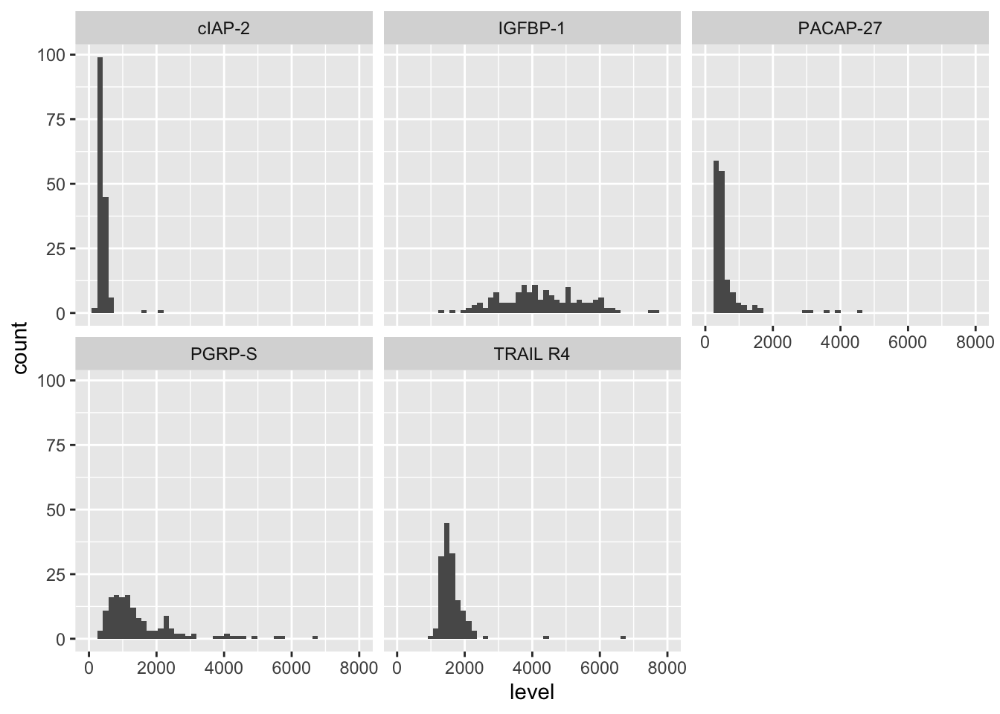
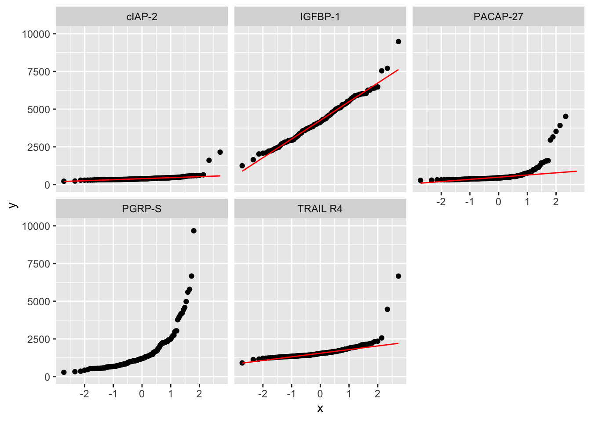
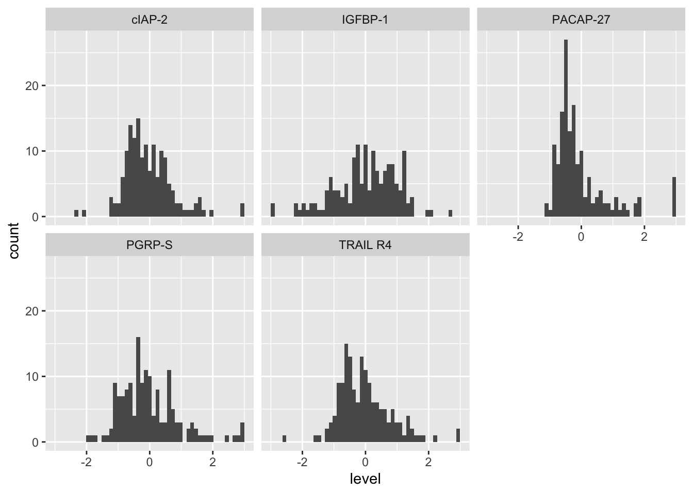
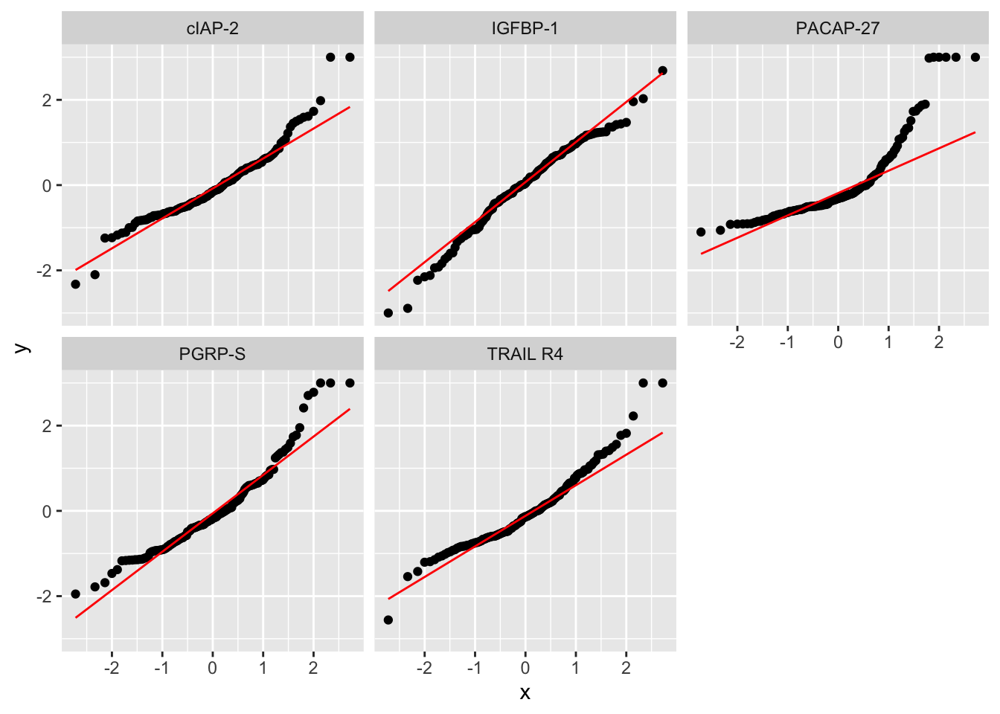

flowchart TD
A[Collect Data] --> |Clean the Data|B{Apply Variable Selection Methods}
B --> |One| C[Correlation Coefficients]
B-->|Two| D[T Test]
B --> |Three| F[Random Forest]
C --> G[Take Top 10 Most Important Protiens]
D --> G
F --> G
G --> I[See if Proteins that are in a Top 10 <br> List Improve the ROC curve]
G --> H[Proteins That are in All <br> Three Lists are Important]
I --> |If They Do|J[Classify Them as Important]
Biomarkers of ASD
Group 10
Abstract
Our analysis of the ASD biomarker data set expands on the Hewitson et al.(2021) paper by evaluating the impact of log and outlier transformations on the data, exploring how variations in the original methodology affect the resulting core protein panel, and attempting to improve the classification model proposed in the research article. In the context of this dataset, this involves finding proteins that are predictors, or biomarkers, of Autism Spectrum Disorder. The goal of the analysis to explore various classification methods and modifications that improve their efficacy. In reference to the preproccesing of the biomarker dataset, we use graphics and statistical testing to show how log transformations of the protein levels make the data more normal and quantify the difference between the occurrence of outliers in TD vs. ASD subjects. Moving onto the methodology, we find that splitting the dataset into training and testing, using a larger panel size, and utilizing a fuzzy (rather than a hard) intersection does not necessarily improve the accuracy of the model. Finally, we use a stepwise regression approach to improve the classification methodology in the previous task by finding a simpler method that maintains the same accuracy. Using both forwards and backwards selection, we find a panel of 6 proteins that produces similar AIC and deviance scores to the full model. This, thereby, improves the simplicity of the classifier without sacrificing its validity.
Dataset
The data was gathered from Hewitson et al. (2021). In total the data set consists of 154 male participants of whom 76 have ASD, mean age of 5.6 years, and the other 78 are typically developing boys, mean age of 5.7 years, with ages ranging from 18 months to 8 years of age. In terms of demographics, both ASD and TD groups had majority White/Caucasian with 45.2% and 51.9% respectively while Asian or Pacific Islander made up the minority with 2.6% and 3.9%. Moreover, a majority of boys reported no comorbidities, 52.8% and 75.3%, however seasonal allergies followed with 41.7% of ASD boys and 22.4% of TD boys. For medications attribute “none” was also the majority having 92% of ASD boys and 97.4% of TD boys falling into this attribute, other medications were too few in representation. On top of this, ASD boys specifically went through ADOS testing which measures ASD symptom severity between 6 and 23, 23 being the most severe, and TD boys went through ABAS-II testing to ensure there were no developmental concerns.
With our overarching goal to identify a panel of proteins that correlated as a blood biomarker for detecting ASF early, the data required a way to gather serum levels of proteins, thus each participant underwent blood draws utilizing serum separation tubes. A total of 1,317 proteins were identified and 1,125 analyzed after 192 proteins failed quality control. For data preprocessing, protein data was log-transformed, center and scaled, and trimmed. This way the data would be standardized and normalized, trimming allowed us to take note of outliers, values less than -3 or greater than 3 were considered outliers. Our data is now ready for testing to find the top predictive proteins.
Summary of published analysis
After collecting the data, the data was then cleaned by removing proteins that did not pass quality control, normalized through a log10 transform and then a z-transformation, and then values greater than 3 and less than -3 were clipped to 3 and -3. The clipping was to prevent outliers from influencing the analysis.
After the data was cleaned, the paper then used 3 different methods to evaluate the importance of each protein to ASD. The three methods are the correlation coefficients, T-tests, and random forests. The correlation coefficients were found by calculating the correlation between each protein and the ADOS scores. The top 10 proteins with the largest absolute value correlation coefficient were identified. The T test method was used to determine if the mean level of each protein from group of ASD subjects was significantly different from the mean level of the TD subjects. The top 10 proteins from this method were identified through the tests that had the highest significance. Finding the most significant proteins from random forests relies on boosting decision trees to create a large amount of trees. Keeping track of which proteins were used most often can signify how important that protein is to predicting ASD. Thus the 10 proteins with the highest averaged importance index were identified.
After finding the top 10 proteins for each of the methods, any protein that was in the top 10 for all 3 methods was classified as a ‘core’ protein. There were 5 proteins that the paper found measured in the top 10 for all 3 methods and 13 others that were in either 1 or 2 methods top 10 list. In order to determine if any of the 13 other proteins were important they created logistic regressions with the 5 ‘core’ proteins and added on of the 13 other proteins at a time. The metric the paper used to determined if the protein was important to ASD was if the logistic regression ROC increased by a significant amount. From this, they identified 4 more proteins to be significant in determining ASD. The 9 proteins that the paper suggests are the optimal proteins to identify ASD are the 5 ‘core’ proteins, mitogen-activated protein kinase 14 (MAPK14), immunoglobulin D (IgD), dermatopontin (DERM), ephrin type-B receptor 2 (EPHB2) and soluble urokinase-type plasminogen activator receptor (suPAR) along with the 4 additional proteins, receptor tyrosine kinase-like orphan receptor 1 [ROR1], platelet receptor Gl24 [GI24], eukaryotic translation initiation factor 4H [elF-4H], and arylsulfatase B [ARSB]. The logistic regression with these proteins resulted in an AUC score of 0.860, a sensitivity of 0.833 and a specificity of 0.846.
Findings
Impact of preprocessing and outliers
Question 1: Impact of log transformation
In order to investigate the role of the log transformation in the preprocessing of our biomarker data, we will first look at the distribution of raw values for a sample of proteins.
First, we randomly sampled 5 proteins from the raw dataset. The proteins sampled were PGRP-S, PACAP-27, TRAIL R4, IGFBP-1, cIAP-2.
The distributions of the protein levels for these 5 proteins are shown below.

As we can see, the distributions do not seem normal as many of them are skewed to the left and do not seem centered around a mean. We can use qqplots for each of these proteins to support this conclusion. These are shown below:

As shown above, a lot of the protein level distributions for our sample of 5 proteins do not follow the qqline shown in red for each above qq-plot. To determine if they significantly stray away from a normal distribution, we can use Shapiro-Wilk Tests.
# A tibble: 5 × 3
protein pval normal
<chr> <dbl> <lgl>
1 IGFBP-1 2.61e- 2 FALSE
2 PACAP-27 1.04e-24 FALSE
3 PGRP-S 1.68e-23 FALSE
4 TRAIL R4 9.77e-21 FALSE
5 cIAP-2 1.06e-22 FALSE The tests with p-values smaller than our alpha of 0.05 indicate that we should reject the null hypothesis that the distributions of the levels for these proteins is normal. As shown above, all proteins failed the normality test.
This is why the log transformation is required. Below, we once again generate distribution histograms and qq-plots for each protein. However, this time we use the log transformed data for these proteins from the biomarker_clean dataset.

As we can see above, compared to the original protein level distributions for these proteins, the distributions look much closer to the normal distribution

The qq-plots also look much more representative of normal distributions after the log transformation.
Question 2: Impact of outliers
| group | TotalOutliers | OutliersMean | OutilersSD | OutliersMax | OutlierNumbers | NonOutlierNumbers |
|---|---|---|---|---|---|---|
| ASD | 1007 | 13.25000 | 19.81994 | 126 | 75 | 1 |
| TD | 1372 | 17.58974 | 29.24657 | 157 | 77 | 1 |
As we can see by the data frame, of the 76 subjects with ASD, 75 of them had at least one protein above the threshold. Similarly, the TD group had 77 out of the 78 subjects to have at least one protein above the threshold. In these subjects, there are a total of 1007 proteins that are above the threshold in the ASD group and 1372 total proteins that are above the threshold in the TD group. This means that a ASD subject has on average 13.25 proteins that were trimmed off, when TD subjects had on average around 17.59 proteins that were outliers. Thus, outliers are more frequent in subjects in the TD group than the ASD group.
Methodological variations
We looked at the following three modifications to the methodology and evaluated how each impacted the results.
Modification 1:
Repeat the analysis but carry out the entire selection procedure on a training partition (set aside some testing data at the very beginning and don’t use it until you are evaluating accuracy at the very end)
We used a proportion of 0.8 to divide our dataset into training and testing sets with 80% of the units being assigned to the training set.
How are the results affected by this modification: By setting aside testing data at the start, we ensure that the evaluation is more accurate and unbiased, as the model and feature selection are based solely on the training data. This also ensures that the accuracy isn’t falsely inflated as the data that the model is tested on is not the same as the data it was trained on.
Modification 2:
Choose a larger number (more than ten) of top predictive proteins using each selection method
For both the t-test and random forest selection methods, we used the top 20 proteins based on their significance or importance scores.
How are the results affected by this modification: Increasing the number of proteins used as features can allow the model to capture more variance in the data, which may improve the predictive accuracy.
Modification 3:
Use a fuzzy intersection instead of a hard intersection to combine the sets of top predictive proteins across selection methods
We determined the intersection by finding the top 20 proteins with the greatest predictive rank in the union between the panels found through t-tests and random forest.
How are the results affected by this modification: This increases flexibility by allowing proteins that are significant in only one method but rank highly to contribute to the model.
Evaluating these modifications
The panel of 20 proteins generated from applying the t-test method on the training data is shown below:
[1] "DERM" "IgD" "TSP4"
[4] "C1QR1" "MRC2" "PTN"
[7] "FSTL1" "Calcineurin" "RELT"
[10] "RET" "Cadherin-5" "MIA"
[13] "TFF3" "PEDF" "ROR1"
[16] "Fas, soluble" "Coagulation Factor IX" "suPAR"
[19] "STRATIFIN" "MATN2" The panel of 20 proteins generated from applying the random forest method on the training data is shown below:
[1] "DERM" "eIF-4H"
[3] "IgD" "M2-PK"
[5] "TSP4" "MAPK14"
[7] "ALCAM" "CK-MB"
[9] "CSK" "MRC2"
[11] "SRCN1" "Notch 1"
[13] "C1QR1" "14-3-3 protein zeta/delta"
[15] "PPID" "PEDF"
[17] "PTN" "ILT-4"
[19] "EGFRvIII" "RGM-C" Using a fuzzy intersection (based on the predictive rank of the proteins) to merge these 2 panels into a group of 20 core proteins, this final panel is shown below:
[1] "DERM" "IgD" "TSP4" "MRC2" "C1QR1"
[6] "PTN" "eIF-4H" "M2-PK" "MAPK14" "FSTL1"
[11] "ALCAM" "Calcineurin" "CK-MB" "RELT" "PEDF"
[16] "CSK" "RET" "Cadherin-5" "SRCN1" "MIA"
[21] "Notch 1" We can now evaluate the accuracy of this modified panel to see if these methodological variances made a difference. This will be done through a logistic regression like the initial panel. However, it will be performed on the test group that we separated out in Modification 1. The metrics for our logisitic regression are shown below:
# A tibble: 4 × 3
.metric .estimator .estimate
<chr> <chr> <dbl>
1 sensitivity binary 0.75
2 specificity binary 0.333
3 accuracy binary 0.571
4 roc_auc binary 0.333As we can see the accuracy is low. This is lower than the accuracy generated by the in-class analysis which was 0.7532. This may be due to the fact that we are using a separate test set and not classifying the same data that was used to train the model. It may also be caused by the fuzzy intersection or larger panel, which may be allowing unnecessary predictor proteins to decrease the accuracy of the model.
Improved classifier
To improve a classifier, a model can be either simplified while still achieving the a similar accuracy or can be made more complicated to achieve a better accuracy. This is because the Occam’s razor principle suggests that when choosing between models, the simpler model is better assuming that it achieves the same accuracy. Thus we decided to simplify our model from task 3. Our approach to simplifying the model was through stepwise regression. Stepwise regression is adding or removing parameters for a logistic regression based on a criterion until adding any of the remaining parameter does not significantly improve our glm or removing any parameter worsens our model. The criterion we used was AIC which is calculated using the number of independent variables and the maximum likelihood estimate of the model to determine if the increase in variables produces a better model. We deployed forwards selection, which only adds variables, backwards selection, which only removes variables, and both, which can add and remove variables. We identified our “best” proteins as the proteins that were in 2 or 3 of the stepwise regressions. The 6 proteins that achieved this are, DERM, IgD, PTN, RELT, CSK and 14-3-3 protein theta.
The Summary of the Forwards Model
Call:
glm(formula = class ~ DERM + `M2-PK` + IgD + SRCN1 + FSTL1 +
PEDF + PTN, family = binomial, data = biomarker_sstar)
Coefficients:
Estimate Std. Error z value Pr(>|z|)
(Intercept) -0.06722 0.22433 -0.300 0.764449
DERM -0.81902 0.33462 -2.448 0.014381 *
`M2-PK` -0.88419 0.26189 -3.376 0.000735 ***
IgD -1.01087 0.26151 -3.866 0.000111 ***
SRCN1 -0.87685 0.28039 -3.127 0.001765 **
FSTL1 -0.54878 0.30302 -1.811 0.070130 .
PEDF -0.66082 0.29090 -2.272 0.023106 *
PTN -0.54863 0.34126 -1.608 0.107908
---
Signif. codes: 0 '***' 0.001 '**' 0.01 '*' 0.05 '.' 0.1 ' ' 1
(Dispersion parameter for binomial family taken to be 1)
Null deviance: 213.46 on 153 degrees of freedom
Residual deviance: 123.45 on 146 degrees of freedom
AIC: 139.45
Number of Fisher Scoring iterations: 6The Summary fo the Backwards Model
Call:
glm(formula = class ~ DERM + IgD + PTN + `M2-PK` + MAPK14 + Calcineurin +
PEDF + SRCN1 + `Notch 1`, family = binomial, data = biomarker_sstar)
Coefficients:
Estimate Std. Error z value Pr(>|z|)
(Intercept) -0.1296 0.2297 -0.564 0.57274
DERM -0.7111 0.3493 -2.036 0.04177 *
IgD -1.2256 0.2934 -4.177 2.96e-05 ***
PTN -0.5840 0.3626 -1.610 0.10733
`M2-PK` -0.9637 0.3198 -3.013 0.00259 **
MAPK14 0.6028 0.4058 1.485 0.13742
Calcineurin -0.5628 0.3709 -1.518 0.12913
PEDF -0.7435 0.2910 -2.555 0.01061 *
SRCN1 -1.0756 0.3456 -3.112 0.00186 **
`Notch 1` -0.6785 0.4332 -1.566 0.11735
---
Signif. codes: 0 '***' 0.001 '**' 0.01 '*' 0.05 '.' 0.1 ' ' 1
(Dispersion parameter for binomial family taken to be 1)
Null deviance: 213.46 on 153 degrees of freedom
Residual deviance: 119.88 on 144 degrees of freedom
AIC: 139.88
Number of Fisher Scoring iterations: 6The Summary of the Forwards and Backwards Model
Call:
glm(formula = class ~ DERM + IgD + PTN + `M2-PK` + MAPK14 + Calcineurin +
PEDF + SRCN1 + `Notch 1`, family = binomial, data = biomarker_sstar)
Coefficients:
Estimate Std. Error z value Pr(>|z|)
(Intercept) -0.1296 0.2297 -0.564 0.57274
DERM -0.7111 0.3493 -2.036 0.04177 *
IgD -1.2256 0.2934 -4.177 2.96e-05 ***
PTN -0.5840 0.3626 -1.610 0.10733
`M2-PK` -0.9637 0.3198 -3.013 0.00259 **
MAPK14 0.6028 0.4058 1.485 0.13742
Calcineurin -0.5628 0.3709 -1.518 0.12913
PEDF -0.7435 0.2910 -2.555 0.01061 *
SRCN1 -1.0756 0.3456 -3.112 0.00186 **
`Notch 1` -0.6785 0.4332 -1.566 0.11735
---
Signif. codes: 0 '***' 0.001 '**' 0.01 '*' 0.05 '.' 0.1 ' ' 1
(Dispersion parameter for binomial family taken to be 1)
Null deviance: 213.46 on 153 degrees of freedom
Residual deviance: 119.88 on 144 degrees of freedom
AIC: 139.88
Number of Fisher Scoring iterations: 6Plots of the Residuals for each Model
{r{}} par(mfrow = c(2, 2)) plot(forward_model$residuals, main = "Forward Residuals", ylab = "Residuals") plot(backward_model$residuals, main = "Backward Residuals", ylab = "Residuals") plot(both_model$residuals, main = "Both-Direction Residuals", ylab = "Residuals")
Comparing the logistic regression with all 20 core proteins and our simpler model, we find that our model has a residual deviance of 130.74 when the full model only has a residual deviance of 119.37. Similarly, the AIC for the reduced model is 144.74, when the full model obtains an AIC of 161.37. Since the model is able to produce similar AIC and deviances and is a simpler model, we suggest that our panel of 6 proteins is superior to the 20 proteins we found in task 3.
Analysis of Deviance Table
Model 1: class ~ DERM + IgD + TSP4 + MRC2 + C1QR1 + PTN + `eIF-4H` + `M2-PK` +
MAPK14 + FSTL1 + ALCAM + Calcineurin + `CK-MB` + RELT + PEDF +
CSK + RET + `Cadherin-5` + SRCN1 + MIA + `Notch 1`
Model 2: class ~ DERM + IgD + PTN + RELT + CSK
Resid. Df Resid. Dev Df Deviance
1 132 114.01
2 148 138.77 -16 -24.753